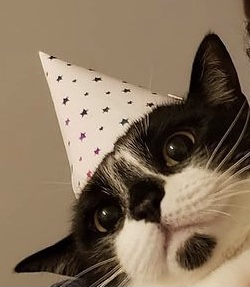

<!DOCTYPE html>
<html lang="en-US"></html>
<head>
  <link href="css/bootstrap.css" rel="stylesheet" type="text/css">
  <link href="css/styles.css" rel="stylesheet" type="text/css">
  <script src="js/jquery-3.6.0.js"></script>
  <script src="js/scripts.js"></script>
  <title>My Cat: Lil'mama Velma</title>
</head>
<body>
  <h1>My Cat: Lil'mama Velma</h1>
  
  <h3>Background Color Buttons</h3>
  <button class="btn btn-secondary" id="grey">Grey</button>
  <button class="btn btn-light" id="normal">Normal</button>
  <h2>Relevant Cat Facts</h2>
    <ol>
      <li><strong>Velma</strong> is a <a href="https://rawznaturalpetfood.com/tuxedo-cats/"><em>Tuxedo Cat</em></a>.</li>
    </ol>
  <!-- Section 1: Favorite Toys -->
  <h2>Favorite Toys</h2>

  <p>These are some of Velma's favorite toys in no particular order.</p>
    <ul>
      <li>Wedding Rings</li>
      <li>Trashbags</li>
      <li>Her Stuffed Platypus</li>
    </ul>
  <!-- Section 2: Favorite Activities -->
  <h2>Favorite Activities</h2>

    <p>These are Velma's favorite activities in no particular order as well.</p>
    <ul>
      <li>Peekaboo</li>
      <li>Tag</li>
      <li>Bellyrubs</li>
      <li>Mean Mugging</li>
      <li>Playing with her brother, Vulcan</li>
      <li>Bullying her older brother, Vader.</li>
    </ul>
</body>